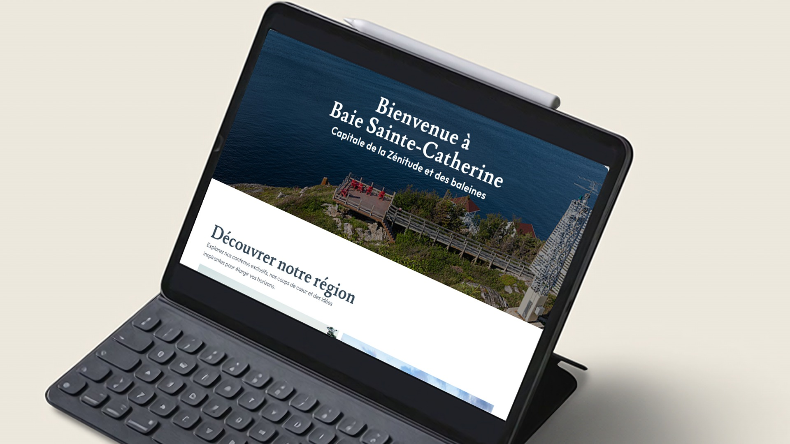

01
Recherche et analyse
Premièrement, j’ai analysé le site actuel de la municipalité pour repérer ce qui ne fonctionnait pas : la navigation, la lisibilité et l’organisation de l’information.
Olivier Georges
000%
Baie-Sainte-Catherine est un projet de design UI/UX et d’intégration Web dans lequel j’ai repensé le site de la municipalité pour lui donner un style plus moderne, plus clair et plus agréable à consulter.
Designer et intégrateur - En équipe - Projet scolaire - 2026
Tester le projet

Le projet Baie-Sainte-Catherine a été réalisé dans le cadre du cours Design d'experience . Nous devions faire la refonte complète du site d’une municipalité : concevoir la maquette dans Figma, puis l’intégrer en HTML, CSS et JavaScript en respectant un design responsive pour l’ordinateur, la tablette et le mobile.
Designer UI/UX et intégrateur Web. J’ai conçu la maquette du site dans Figma et j’ai intégré les pages en HTML, CSS et JavaScript, incluant la page contact en responsive.
Dans ce projet l'IA à été utilisé de façon très minime. Elle à servie à créer et corriger des textes et des titres pour le site Web.

Premièrement, j’ai analysé le site actuel de la municipalité pour repérer ce qui ne fonctionnait pas : la navigation, la lisibilité et l’organisation de l’information.

Deuxièmement, j’ai conçu la maquette du nouveau site dans Figma : couleurs, typographies, grille et composantes réutilisables.

Troisièmement, j’ai intégré la maquette en HTML, puis ajouté les médias, icônes, liens et typographies.

Quatrièmement, l’intégration du CSS et du responsive, afin que le site soit agréable sur tous les écrans.

Dernièrement, l’ajout du JavaScript pour rendre le site interactif : [menu, animations, carrousels, etc.


Garder les couleurs et les images de la région, mais avec une mise en page plus épurée.
Penser le design mobile dès la maquette et tester chaque page à plusieurs largeurs.
Regrouper le contenu en sections et en cartes pour faciliter la navigation.
En conclusion, le projet Baie-Sainte-Catherine m’a permis de réaliser un projet complet, de la conception dans Figma jusqu’à l’intégration en HTML, CSS et JavaScript. Il m’a appris à penser à l’expérience utilisateur avant même de coder, et à rendre un site vraiment responsive.
Retourner aux projets
Projet Boxotel
Dans ce projet, l’IA a été utilisée de façon très minime .
Nous aider à débugger des problèmes que nous n’arrivions pas à régler par nous-mêmes.
Aucun segment de code fourni par l’IA n’a été utilisé dans le projet.
Le design, la refonte et l’intégration ont entièrement été faits par l’équipe.
Refonte du site, intégration de la page d’accueil et de la liste des chambres : Yoan Robitaille
Intégration des pages des chambres, de la page des services et du menu déroulant : Olivier Georges
Marque et contenu d’origine : Boxotel